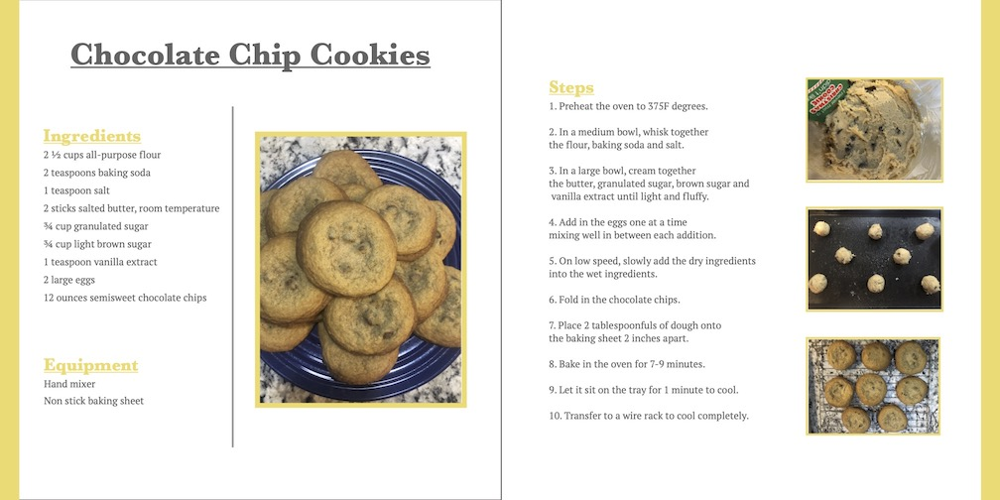

Cook Book Recipe
For this project I had to design the information
of a recipe as if it was in a cook book. I choose the
recipe that I make very often for me and my family which is
chocolate chip cookies. This project was a good experience of putting
a lot of information onto a canvas and making it apeling and easy to read.
I also loved this project for the plate of cookies I got at the end of it!
